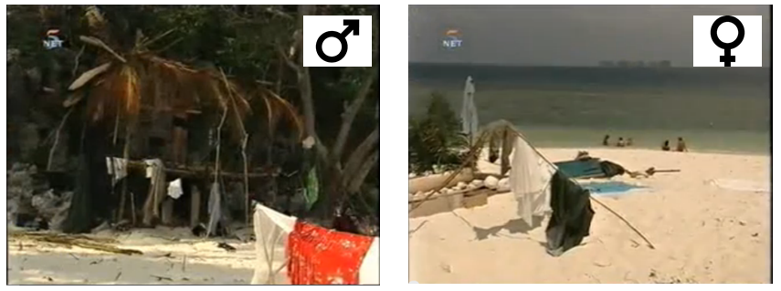
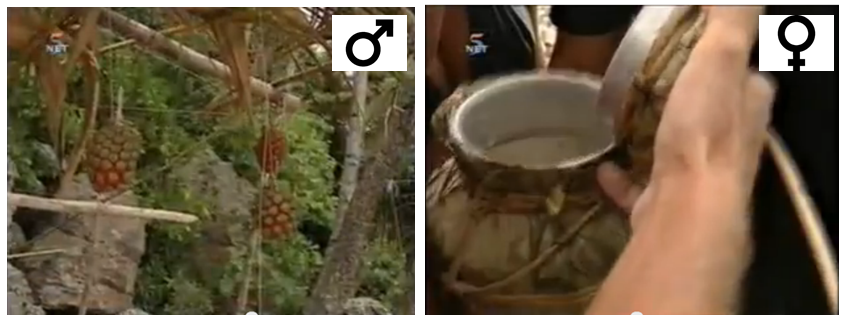
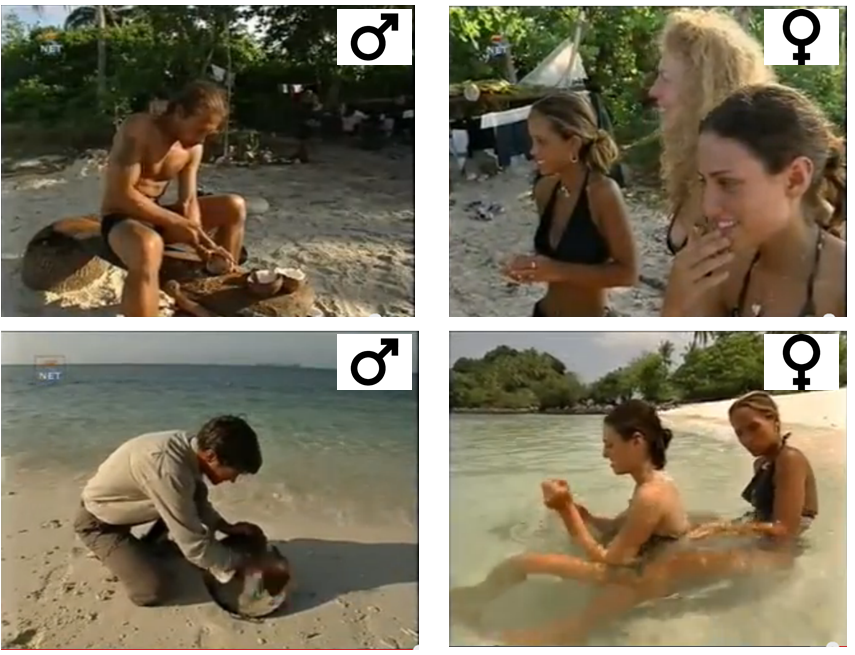

< < < Back
This Accidental Experiment Shows The Superiority Of Patriarchy – Return Of Kings
Patriarchy has been extremely successful, despite its recent vilification. Most cultures worldwide are patriarchal – to find examples of successful matriarchal societies you either have to turn to ancient history, remote outskirts of the world or feminist fiction. However, this hasn’t stopped the feminist collective from queefing out books and even a hashtag hailing the end of patriarchy in a textbook example of incestuous amplification.
What patriarchy, after its apparent downfall, will be replaced with remains to be seen. Hamsterizations aside, there is surprisingly little data available about what life would be like in a society made up of only men or only women. An enterprising social scientist might want to perform an experiment where groups of men and groups of women are left to their own devices, having to work together to survive against the elements and build a civilization from scratch. However, this scientist would have a very hard time convincing ethical review boards that the inevitable suffering of his participants would weight up against the value of the data.
Luckily, reality television is not bound by ethical constraints and once in a while, in its never ending quest for viewer ratings, reality TV accidentally performs a very interesting experiment that social scientists would never be allowed to do.
Quite a few years ago, I had the pleasure of watching the Dutch version of Survivor (Expeditie Robinson) with my feminist roommate. That particular season would have two islands, one populated by men and one populated by women. My roommate had been promoting that particular series to me and the other students in the house for weeks because it would show us, according to her, what a society run by women – free from the evils of patriarchy – would be like.
And it did. Oh it did.
Here is what happened: initially both groups were dropped on their respective islands, given some supplies to get started and left to fend for themselves. In both groups there was some initial squabbling as people tried to figure out a local hierarchy. The men pretty much did whatever they felt was necessary – there was no leader giving orders. Men who felt like hunting, foraging or fishing did so. Another guy decided he was fed up with sitting on sand and started making benches. Others built a hut that gradually grew and evolved. Another guy cooked every night. Within days a neat little civilization was thriving, each day being slightly more prosperous than the previous one.

The women settled into a routine as well. The hung up a clothesline to dry their towels, then proceeded to sunbathe and squabble. Because unlike men, women were unable to do anything without consensus of the whole group. And because it was a group of at least a dozen women, consensus was never reached. During the next few episodes, the women ate all their initial supplies, got drenched by tropical storms several times, were eaten alive by sand fleas and were generally miserable. The men on the other hand, were quite content. There were disagreements of course, but they were generally resolved.
Eventually, the people running the program decided something had to change. In order to help the women out, three men would be selected to go to their island. In return, three women would take their place at the men’s island. The look on my feminist roommates face during this episode was priceless.

Initially, the three men selected for the women’s island were ecstatic, for obvious reason. But then they arrived at the island and were greeted by the women.
‘Where is your hut?’, they asked.
‘We have no hut’
‘Where are your supplies?’ they asked, dismayed
‘We ate all the rice’

And so on. The three men ended up working like dogs, using all the skills developed by trial and error in their first few weeks – building a hut, fish, trying to get the women to forage. The women continued to bitch and sunbathe. The three women who were sent to the men’s island were delighted – food, shelter and plenty of male attention was freely available. They too continued to sunbathe.
And that my friends, is what patriarchy is. My former roommate, unsurprisingly, is no longer a feminist.
Now this might all be a fluke, a white raven, an exceptional case not representative of society as whole. But that particular season of Dutch Survivor is not unique. CBS broadcast several Survivor seasons in the US, where men and women started off in separate groups. In most cases (the Amazon and One World), the result was the same. The men quickly got their act together, getting access to food, fire and shelter while the women spent a lot of time and energy on petty little squabbles, eating their meager supplies, getting drenched in storms and generally being pathetic. The opposite situation, where men didn’t get their act together while women quickly built a functional micro society, has not yet been observed outside of feminist fiction, and it probably never will.
 If you like this article and are concerned about the future of the Western world, check out Roosh's book Free Speech Isn't Free. It gives an inside look to how the globalist establishment is attempting to marginalize masculine men with a leftist agenda that promotes censorship, feminism, and sterility. It also shares key knowledge and tools that you can use to defend yourself against social justice attacks. Click here to learn more about the book. Your support will help maintain our operation.
If you like this article and are concerned about the future of the Western world, check out Roosh's book Free Speech Isn't Free. It gives an inside look to how the globalist establishment is attempting to marginalize masculine men with a leftist agenda that promotes censorship, feminism, and sterility. It also shares key knowledge and tools that you can use to defend yourself against social justice attacks. Click here to learn more about the book. Your support will help maintain our operation.
Read More: Why Patriarchy Is The Greatest Social System Ever Created


{kind=link}
{kind=link}
{kind=link}